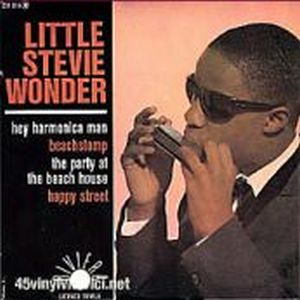
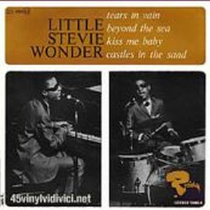

The title of the album is mainly for their guest appearances in several movies as Bikini Beach, and Muscle Beach
Party, apart from trying to exploit the great success in those moments of a "surf spirit" capitalized by popular groups like The Beach Boys.
The album's songs revolve around the ocean environment and includes some popular standard items, like "Ebb Tide" and some instrumentals. The longer a child prodigy in music, continues to surprise with their way of interpreting and playing the instruments, and although for this period Stevie Wonder -without the Little- by himself as one of the most "embarrassing" for his musical life, that is his point of view demanding...
 